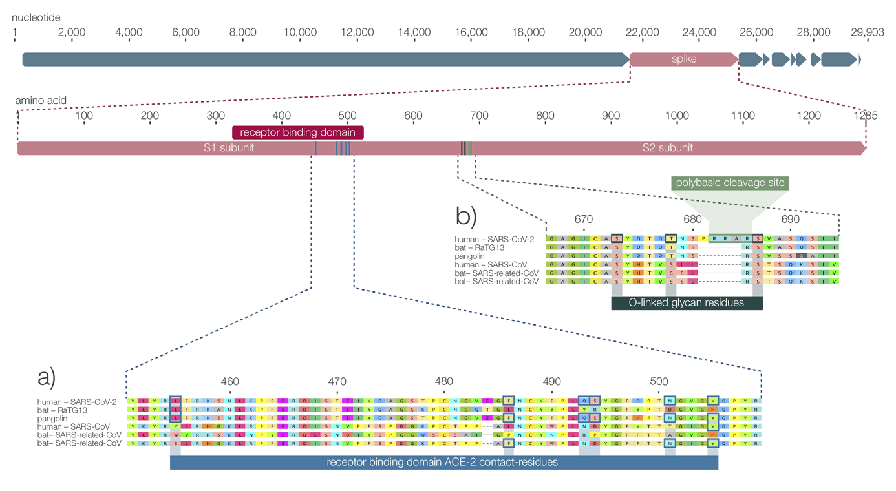
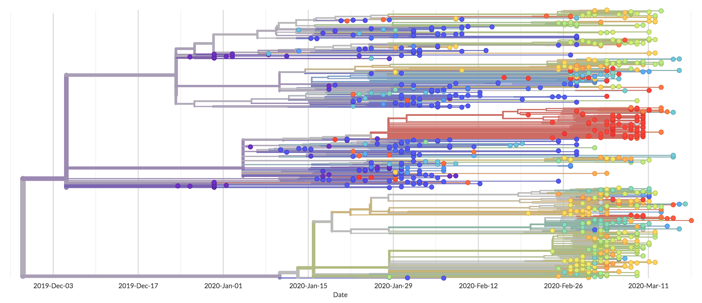
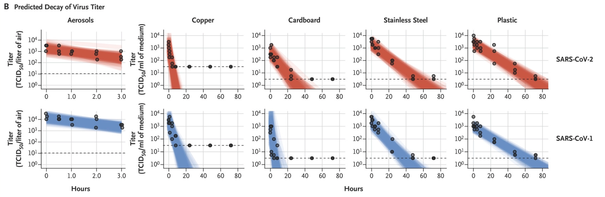

- Where did SARS-CoV-2 originate from? How is SARS-CoV-2 (2019) different than SARS-CoV (2003)?
SARS-CoV-2 is genomically very similar to SARS-CoV virus that caused the SARS epidemic in 2003 and it is the seventh member of the coronaviruses known to infect humans. It is not a laboratory construct nor a purposefully manipulated virus. You can see the genomic comparison to SARS-CoV below (as well as other coronaviruses that infect bats):

The high-level difference is that SARS-CoV-2 spreads easier and quicker than SARS-CoV. This makes so much sense from an evolutionary perspective: the selective force for viruses is to infect more hosts. This means that the versions of the coronaviruses that become better at infecting hosts and also using these hosts to infect others get selected over generations. SARS-CoV-2 has a longer incubation period where the hosts do not show symptoms but still shed the virus. SARS-CoV-2 is also not as deadly, so the host can live longer to host the virus and infect more people.
- Was the SARS-CoV-2 outbreak predictable?
Yes. We could have done more research on coronavirus antivirals to inhibit the virus but since SARS came and went away so quickly pharmaceutical companies did not have a market and this research was not funded.
- Can SARS-CoV-2 mutate and become more dangerous?
While talking about viruses and mutations, it is important to understand a couple of things:
- Viruses mutate continuously. They need to mutate to survive. These individual mutations are small and do not necessarily mean our immune system will not be able to defeat the virus if it learned to defeat it once. SARS-CoV-2 has mutated many times since the beginning of the outbreak in December 2019. You can see all the mutations on a map here.

- Having said that, these small mutations add up and through the selective force of evolution, some viruses will be able to change their surface proteins and look like a new virus to our immune system, in effect escaping immunity.
- As detailed above, viruses are not selected for deadliness, they are selected for infectiousness. So they generally become less virulent over time. This is a common thing that happens in RNA viruses such as flu and corona viruses. This means when SARS-CoV-2 mutates to escape immunity, it is more likely to evolve into more infectious but less deadly versions.
- Can SARS-CoV-2 infect a patient more than once?
Corona viruses are not new, as a result there has been at least some research on them. Research suggests that coronaviruses are protein-stable, i.e. they do not alter their surface proteins easily. In light of this, the more likely explanation for the reinfection claims is that the tests that were done during discharge were false-negatives. When a person gets better, the number of viruses go down slowly, but they do not go to zero right away. During this time testing might be less reliable and the symptoms can later worsen.
- How does SARS-CoV-2 spread?
SARS-CoV-2 is a respiratory virus, like other corona viruses. These viruses use the respiratory secretions to spread. The viruses are primarily shed through droplets generated when an infected person coughs or sneezes, or through droplets of saliva or discharge from the nose. But depending on the person viruses can be shed even while speaking: The letter P is enough to shed hundreds of thousands of viruses. We create aerosols when we talk, cough, sneeze and the virus travels in the aerosol. SARS-CoV-2 is suspected to be able to travel 1-8 feet, depending on aerosol droplet size. Having said that, airborne spread has not been reported for COVID-19 and it is not believed to be a major driver of transmission based on available evidence.
Once on a surface, SARS-CoV-2 coronavirus can survive up to 3 days, depending on the surface:

There are four things to note in this study:
- The study is done by counting the number of viruses on given surfaces. It is very important to know that not every virus that is seen on a surface is able to infect cells. The ratio depends on the virus, and can be as high as 1/1 (Semliki Forest Virus) or as low as 1/1000 (Polio Virus).
- As shown, the number of viruses that are visible decrease over time. So on day 2 there is much fewer viruses on a given surface than on day 1.
- The aerosols data is collected by counting the number of viruses that stay present in a 40 L Goldberg drum used for aerosol survival studies. This is an isolated air drum, and is different from the environments people might get exposed to the aerosols.
- Lastly, a person needs to be exposed to thousands of viruses to be infected. Data so far suggests that this might be more likely through touch. So it is very important to wash your hands thoroughly and frequently.
- Is washing hands better than using hand sanitizer?
Yes, is the short answer. Washing your hands with soap for 30 seconds is better than using a hand sanitizer because if you do not use a generous amount hand sanitizer evaporates quickly, probably before you can clean all the surfaces on your hand to inactivate all the viruses. If you do not have access to soap and water, use a hand sanitizer that contains at least 60% alcohol. Cover all surfaces of your hands and rub them together until they feel dry.
- Will warmer temperatures eradicate the virus?
Temperature and humidity play a role in the transmission of the virus. High temperatures inactivate the virus on surfaces much quicker. High humidity lowers the travel length of the droplets. But in hot and humid climates there are still viral infections, including the flu. So the warmer temperatures will lower the spread a little bit, but lack of global immunity will still be overriding the effects of temperature. This is also evident by the spread in both hemispheres: